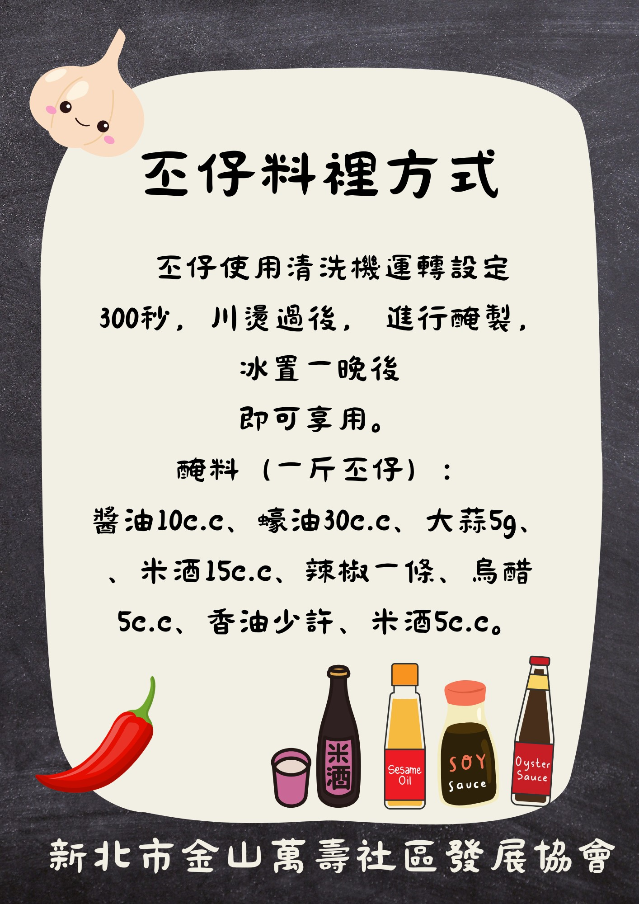

<div class="recipe-container">
  <h2>台灣各地笠螺料理方式</h2>
  <p>笠螺在台灣沿海是常見的美味，不同的在地社區有著獨特的料理手法！</p>
  
  <!-- 插入你提供的第三張圖片（金山萬壽社區的料理配方） -->
  
  
  <div class="recipe-details">
    <h3>醃製笠仔 (金山萬壽社區風味)</h3>
    <p>步驟：使用清洗機運轉 60 秒，川燙後進行醃製。冰置一晚後即可享用。</p>
    <ul>
      <li>醬油 10 c.c.</li>
      <li>蠔油 30 c.c.</li>
      <li>大蒜 5g</li>
      <!-- 依圖片內容補齊 -->
    </ul>
  </div>
</div>